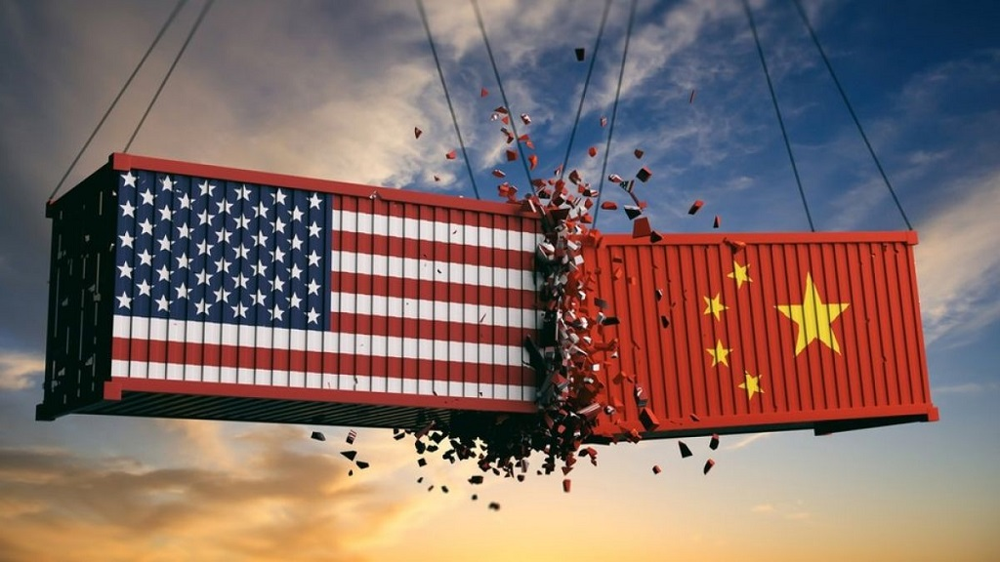

Geopolítica Tecnológica y Poder Tecnologico
La tecnología como poder mundial
Un recorrido por el ascenso de Huawei, la disputa por el liderazgo tecnológico y sus repercusiones en Argentina.
Explorar el informe¿Que es Huawei?
Es una empresa tecnológica china fundada en 1987 por Ren Zhengfei. Inicialmente se especializó en equipos de telecomunicaciones y posteriormente se convirtió en uno de los fabricantes de celulares más importantes del mundo.
¿En qué se centraba Huawei?
Huawei no era simplemente una empresa que fabricaba teléfonos. Tenía negocios en varios sectores:
-
Celulares: competía directamente con Apple y Samsung.
-
Telecomunicaciones: fabricaba antenas, equipos de redes y tecnología 4G y 5G.
-
Infraestructura tecnológica: desarrollaba equipos utilizados por operadores de telefonía.
-
Investigación y desarrollo: invertía enormes cantidades de dinero en innovación y tecnología propia.
Adentrate e informate más sobre Huawei



Descubre más